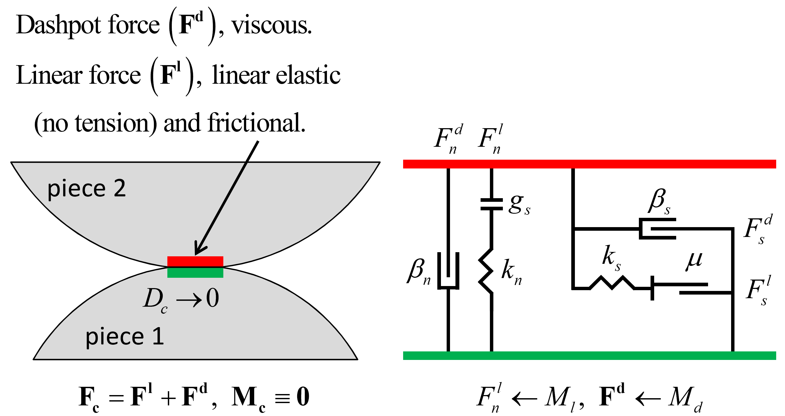
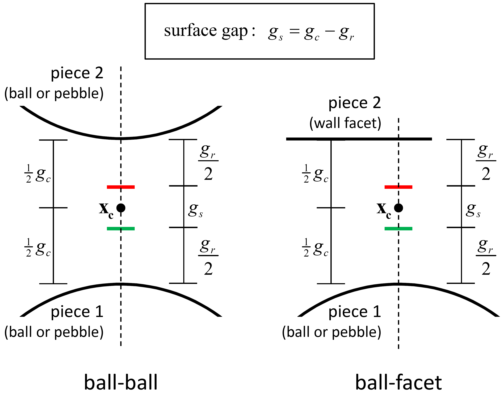
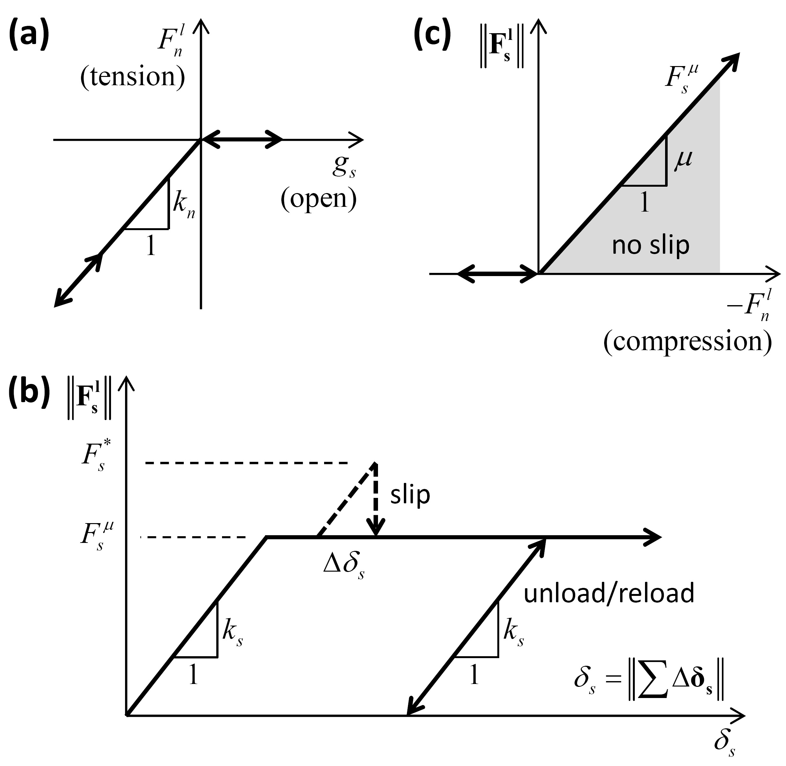
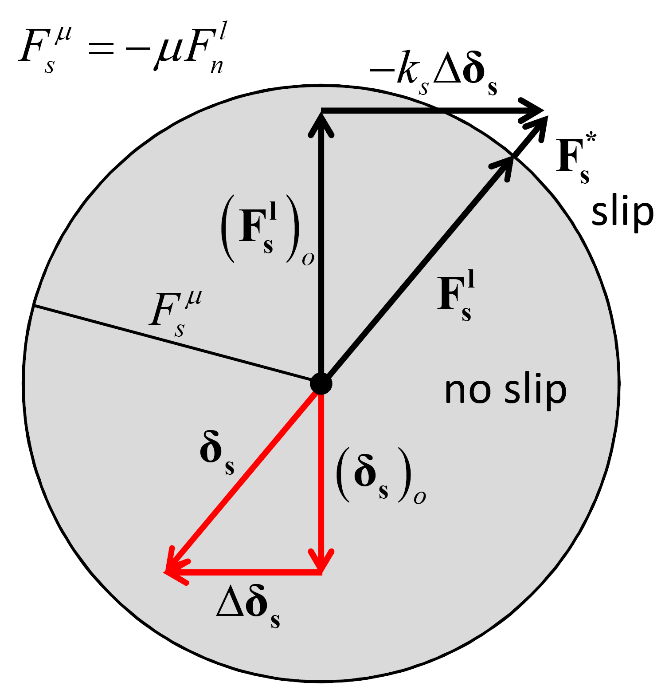
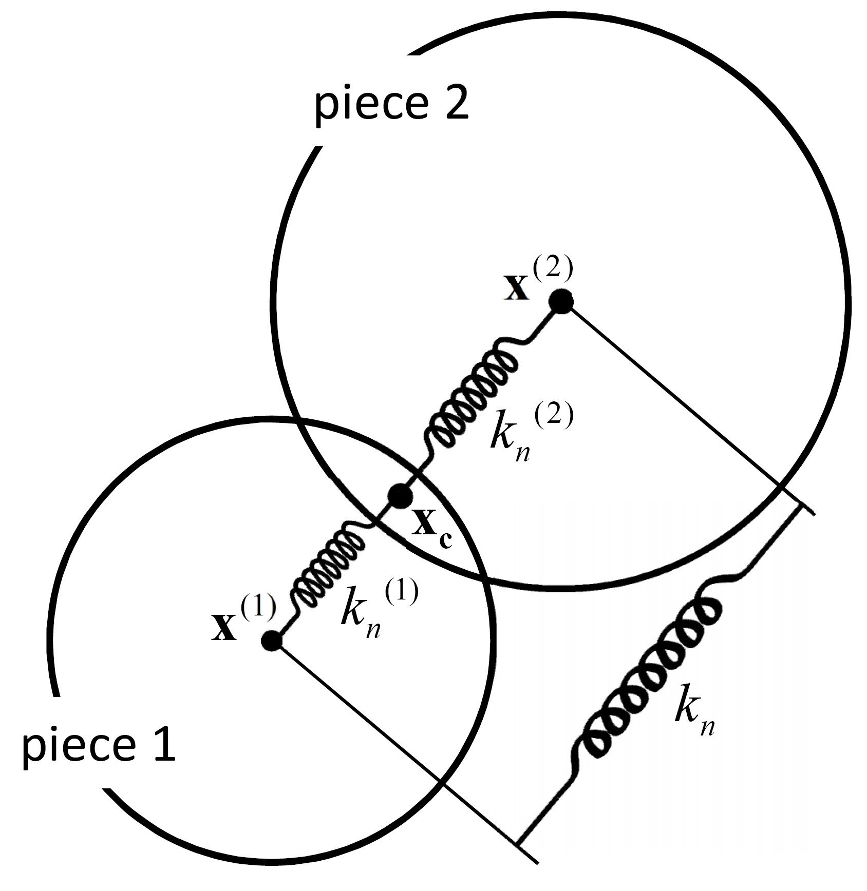
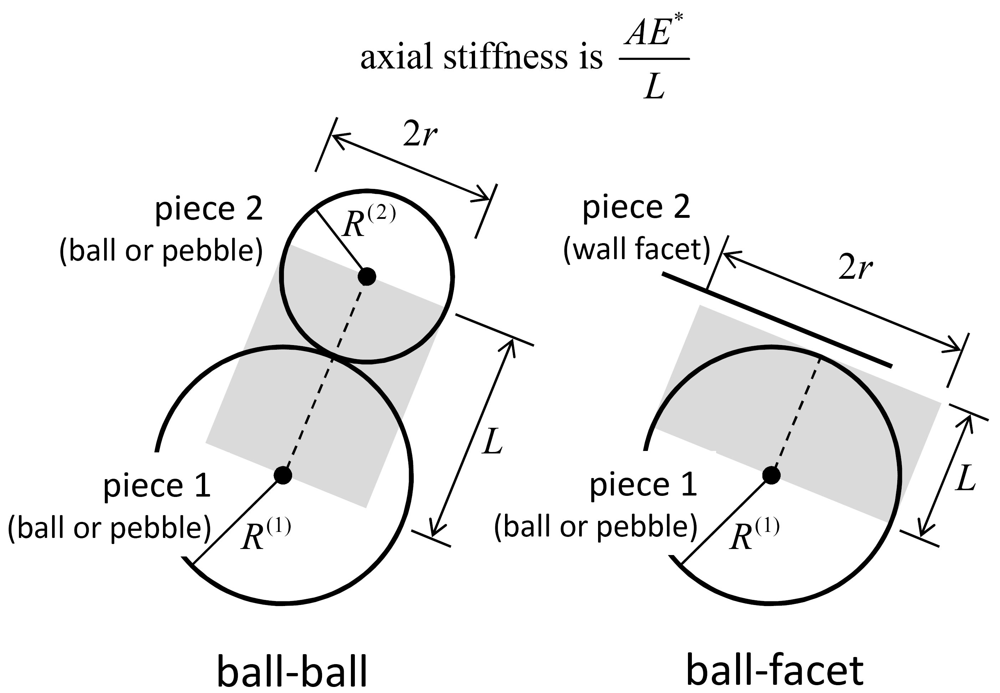

线性模型
阻尼器未激活且参考间隙为零的线性模型对应于 [Cundall1979a] 的模型。它是一种线性类模型（linear-based model），可安装于球-球接触和球-面片接触，在命令和 FISH 中称为 linear。
引言
线性模型提供彼此并联作用的线性组件和阻尼器组件。线性组件提供线弹性（无拉伸）摩擦行为，而阻尼器组件提供黏性行为。两个组件都作用在极小面积上，因而只传递力。
行为概要
线性模型描述不抵抗相对转动的无穷小界面，因此接触力矩为零 \((\mathbf{M_{c}} \equiv 0)\)。接触力分解为线性分量和阻尼器分量 \((\mathbf{F_{c}} = \mathbf{F^{l}} + \mathbf{F^{d}})\)。线性分量提供线弹性（不承受拉力）与摩擦行为，阻尼器分量提供黏性行为，见图 1（Figure 1）。线性力由法向刚度 \(k_n\) 和剪切刚度 \(k_s\) 恒定的线性弹簧产生。阻尼器力由黏性阻尼器产生，其黏性参数通过法向和剪切临界阻尼比 \(\beta_n\) 和 \(\beta_s\) 给定。线性弹簧与阻尼器并联作用。表面间隙 \(g_s\) 定义为接触间隙 \(g_c\) 与参考间隙 \(g_r\) 之差；参考间隙为零时，名义表面与构件表面重合，见图 2（Figure 2）。当且仅当表面间隙小于或等于零时，接触处于激活状态；非激活接触不执行力—位移关系计算。
线性弹簧不能承受拉力，滑移通过在剪切力上施加由摩擦系数 \(\mu\) 确定的 Coulomb 极限来体现。将线性力的法向 和剪切分量分别记为 \(F_{n}^{l}\) 和 \(\mathbf{F_{s}^{l}}\)。\(F_{n}^{l}\) 或者基于表面间隙按绝对值更新，或者基于表面间隙增量按增量方式更新，更新类型由法向力更新模式 \(M_{l}\) 控制。\(\mathbf{F_{s}^{l}}\) 始终基于相对剪切位移增量按增量方式更新。
阻尼器力受阻尼器模式 \(M_{d}\) 影响，该模式给出法向行为与剪切行为的四种组合。将阻尼器力的法向分量和剪切分量分别记为 \(F_{n}^{d}\) 和 \(F_{s}^{d}\)。法向行为模式可以是 full 或 no-tension，其中 full 表示分配整个阻尼器载荷，no-tension 表示对 \(F_{n}^{d}\) 施加限制以确保总法向力（\(F_{n}^{l} + F_{n}^{d}\)）不变为拉伸。剪切行为模式可以是 full 或 slip-cut，其中 slip-cut 表示若线性弹簧正在滑动，则将 \(F_{s}^{d}\) 设为零。


图 1：线性模型的行为与流变组件。


图 2：线性类模型的表面间隙。
活动-删除准则
采用线性模型的接触当且仅当表面间隙小于或等于零时才是激活的。对未激活的接触会跳过力-位移律。表面间隙见图 2（Figure 2）。当参考间隙为零时，名义表面与块体表面重合。
力-位移定律
在一个时步 \(\Delta t\) 内接触处的相对位移增量由“接触识别（Contact Resolution）”一节中该（this）公式的 \(\Delta \delta _{n}\) 和 \(\Delta \pmb{δ}_{\mathbf{s}}\) 给出。若接触在当前时步内由未激活转变为激活，则只有该增量中表面间隙为负的那部分用于执行法向力和剪切力的增量更新。 相对位移增量按下式调整：
其中 \((g_s)_{o}\) 是时步开始时的表面间隙。调整后的增量用于力-位移律。
线性模型的力-位移律更新接触力和力矩：
其中 \(\mathbf{F^{l}}\) 是线性力，\(\mathbf{F^{d}}\) 是阻尼器力。两种力都分解为法向力和剪切力：
其中 \(F_{n}^{\left\{l,d\right\}} >0\) 表示受拉。两个剪切力都位于接触平面内，线性剪切力在接触平面坐标系中表示为：


图 3：未粘结线性类模型线性分量的力-位移律： (a) 法向力与表面间隙的关系，(b) 剪切力与相对剪切位移的关系， 以及 (c) 滑移包络线。
线性模型的力-位移律包含以下步骤（见图 3（Figure 3））。
根据法向力更新模式更新线性法向力：
(5)\[\begin{split}F_{n}^{l} = \left\{ \begin{array}{rl} \left\{ \begin{array}{rl} k_n g_s, & g_s < 0 \\ 0, & \mbox{otherwise} \end{array} \right. , & \mbox{$M_l = 0$ (absolute update)} \\ \min\left( (F_n^l)_o + k_n\Delta\delta_n, 0 \right), & \mbox{$M_l = 1$ (incremental update)} \end{array} \right.\end{split}\]其中 \(\left(F_{n}^{l} \right)_{o}\) 是时步开始时的线性法向力。对于两种更新模式，都施加无拉伸行为，使线性法向力始终为压缩状态，且仅当表面间隙为负时才非零（如图 3(a)（Figure 3(a)）所示）。
按如下方式更新线性剪切力。计算试探剪切力（见图 4（Figure 4））：
(6)\[\mathbf{F_{s}^{*}} = \left( \mathbf{F_{s}^{l}} \right)_{o} - k_{s} \Delta \pmb{δ} _\mathbf{s}\]其中 \(\left( \mathbf{F_{s}^{l}} \right)_{o}\) 是时步开始时的线性剪切力，\(\Delta \pmb{δ} _\mathbf{s}\) 是式 (1) 中调整后的相对剪切位移增量。计算抗剪强度：
(7)\[F_{s}^{\mu } =-\mu F_{n}^{l} .\]更新线性剪切力：
(8)\[\begin{split}\mathbf{F_s^l} = \left\{ \begin{array}{rl} \mathbf{F_s^*} , & \| \mathbf{F_s^*} \| \le F_s^{\mu} \\ F_s^{\mu} \bigl( \mathbf{F_s^*} / \| \mathbf{F_s^*} \| \bigr), & \mbox{otherwise.} \end{array} \right.\end{split}\]更新滑动状态：
(9)\[\begin{split}s = \left\{ \begin{array}{rl} \mbox{true}, & \| \mathbf{F_s^l} \| = F_s^{\mu} \\ \mbox{false}, & \mbox{otherwise.} \end{array} \right.\end{split}\]若滑移状态为真，则该接触正在滑动。每当滑移状态改变时，都会发生 slip_change 回调事件。

图 4：线性类模型滑动过程中线性剪切力与相对剪切位移的更新。
按阻尼器行为模式更新阻尼器法向力：
(10)\[\begin{split}\begin{array}{l} F_n^d = \left\{ \begin{array}{rl} F^*, & \mbox{$M_d = \{ 0, 2 \}$ (full normal)} \\ \min\left( F^*, -F_n^l \right), & \mbox{$M_d = \{ 1, 3 \}$ (no-tension normal)} \end{array} \right. \\[3mm] \mbox{with }\quad F^* = \left( 2 \beta_n \sqrt{m_c k_n} \right) \dot{\delta}_n \\ \hskip{15mm} m_c = \left\{ \begin{array}{rl} \displaystyle\frac{m^{(1)} m^{(2)}} {m^{(1)} + m^{(2)}}, & \mbox{ball-ball} \\ m^{(1)}, & \mbox{ball-facet} \end{array} \right. \end{array}\end{split}\]其中 \(m^{(b)}\) 是物体 \((b)\) 的质量，\(\dot{\delta}_n\) 是“接触识别（Contact Resolution）”一节中该（this）公式的相对法向平动速度。在该表达式中，\(F^*\) 是整个阻尼器载荷。对于无拉伸的阻尼器法向行为模式，\(F_n^d\) 会受到上限约束，以确保总法向力 \((F_n^l + F_n^d)\) 不会变为拉伸。
按阻尼器行为模式更新阻尼器剪切力：
(11)\[\begin{split}\begin{array}{l} \mathbf{F_s^d} = \left\{ \begin{array}{rl} \left( 2 \beta_s \sqrt{m_c k_s} \right) \dot{\pmb{δ}}_\mathbf{s}, & \mbox{$s =$ false or $M_d = \{ 0, 1 \}$ (full shear)} \\ \mathbf{0}, & \mbox{$s =$ true and $M_d = \{ 2, 3 \}$ (slip-cut)} \end{array} \right. \\[3mm] \mbox{with }\quad m_c = \left\{ \begin{array}{rl} \displaystyle\frac{m^{(1)} m^{(2)}} {m^{(1)} + m^{(2)}}, & \mbox{ball-ball} \\ m^{(1)}, & \mbox{ball-facet} \end{array} \right. \end{array}\end{split}\]其中 \(m^{(b)}\) 是物体 \((b)\) 的质量，\(\dot{\pmb{δ}}_\mathbf{s}\) 是“接触识别（Contact Resolution）”一节中该（this）公式的相对剪切平动速度。对于滑移-截断的阻尼器剪切行为模式，若线性弹簧正在滑动 \(\mbox{($s =$ true)}\)，则 \(\mathbf{F_s^d}\) 设为零。

能量分区
线性模型提供三个能量分区：
- 应变能 \(E_{k}\)，储存在线性弹簧中；
- 滑移能 \(E_{\mu}\)，定义为摩擦滑移耗散的总能量；以及
- 阻尼器能量 \(E_{\beta}\)，定义为阻尼器耗散的总能量。
若激活了能量跟踪，则这些能量分区按如下方式更新：
更新应变能：
(12)\[{\rm E} _{k} =\frac{1}{2} \left(\frac{\left(F_{n}^{l} \right)^{2} }{k_{n} } +\frac{\left\| \mathbf{F_{s}^{l}} \right\| ^{2} }{k_{s} } \right).\]更新滑动能量：
(13)\[\begin{split}\begin{array}{l} {E_{\mu } :=E_{\mu } - {\tfrac{1}{2}} \left(\left(\mathbf{F_{s}^{l}} \right)_{o} +\mathbf{F_{s}^{l}} \right)\cdot \Delta \pmb{δ} _\mathbf{s}^{\mu } } \\ {{\rm with}\qquad \Delta \pmb{δ} _\mathbf{s}^{\mu } =\Delta \pmb{δ} _\mathbf{s} -\Delta \pmb{δ} _\mathbf{s}^{k} =\Delta \pmb{δ} _\mathbf{s} -\left(\frac{\mathbf{F_{s}^{l}} -\left(\mathbf{F_{s}^{l}} \right)_{o} }{k_{s} } \right)} \end{array}\end{split}\]其中 \(\left(\mathbf{F_{s}^{l}} \right)_{o}\) 是时步开始时的线性剪切力，式 (1) 中调整后的相对剪切位移增量已分解为弹性分量 \(\left(\Delta \pmb{δ} _\mathbf{s}^{k} \right)\) 和滑移分量 \(\left(\Delta \pmb{δ} _\mathbf{s}^{\mu } \right)\)。滑移分量与时步内平均线性剪切力的点积给出滑移能量的增量。
更新阻尼器能量：
(14)\[E_{\beta } :=E_{\beta } - \mathbf{F^{d}} \cdot \left(\dot{\pmb{δ} }{\kern 1pt} {\kern 1pt} \Delta t\right)\]其中 \(\dot{\pmb{δ} }\) 是“接触识别（Contact Resolution）”一节中该（this）公式的相对平动速度。
包括这些分区在命令和 FISH 中所用关键字在内的补充信息，见下文（below）的表格。
| 关键字 | 符号 | 说明 | 范围 | 累积 |
|---|---|---|---|---|
| 线性组： | ||||
energy‑strain |
\(E_{k}\) | 应变能 | \([0.0,+\infty)\) | NO |
energy‑slip |
\(E_{\mu}\) | 由滑移耗散的总能量 | \((-\infty,0.0]\) | YES |
| 阻尼器组： | ||||
energy‑dashpot |
\(E_{\beta}\) | 由阻尼器耗散的总能量 | \((-\infty,0.0]\) | YES |
属性
线性接触模型所定义的属性列于下表中作为简明 参考；表中各列信息的说明见接触属性（Contact Properties）一节。 下文还将讨论由表面可继承属性到接触模型属性的映射关系。
| 关键字 | 符号 | 说明 | 类型 | 范围 | 默认 | 可修改 | 可继承 |
|---|---|---|---|---|---|---|---|
| linear | 模型名称 | ||||||
| 线性组： | |||||||
| kn | \(k_n\) | 法向刚度 [力/长度] | FLT | \([0.0,+\infty)\) | 0.0 | YES | YES |
| ks | \(k_s\) | 剪切刚度 [力/长度] | FLT | \([0.0,+\infty)\) | 0.0 | YES | YES |
| fric | \(\mu\) | 摩擦系数 [-] | FLT | \([0.0,+\infty)\) | 0.0 | YES | YES |
| rgap | \(g_r\) | 参考间隙 [长度] | FLT | \(\mathbb{R}\) | 0.0 | YES | NO |
| lin_mode | \(M_l\) | 法向力更新模式 [-] | INT | \(\{0,1\}\) | 0 | YES | NO |
| \(\;\;\;\;\;\;\begin{cases} \mbox{0: update is absolute} \\ \mbox{1: update is incremental} \end{cases}\) | |||||||
| emod | \(E^*\) | 有效模量 [力/面积] | FLT | \([0.0,+\infty)\) | 0.0 | NO | N/A |
| kratio | \(\kappa^*\) | 法向与剪切刚度比 [-] | FLT | \([0.0,+\infty)^*\) | 0.0\(^*\) | NO | N/A |
| \(\kappa^* \equiv \frac{k_n}{k_s}\) | |||||||
| lin_slip | \(s\) | 滑动状态 [-] | BOOL | {false,true} | false | NO | N/A |
| \(\;\;\;\;\;\;\begin{cases} \mbox{true: slipping} \\ \mbox{false: not slipping} \end{cases}\) | |||||||
| lin_force | \(\mathbf{F^l}\) | 线性力（接触面坐标系） | VEC | \(\mathbb{R}^3\) | \(\mathbf{0}\) | YES | NO |
| \(\left( -F_n^l,F_{ss}^l,F_{st}^l \right) \quad \left(\mbox{2D model: } F_{ss}^l \equiv 0 \right)\) | |||||||
| user_area | \(A\) | 恒定面积 [长度*长度] | FLT | \((0.0,+\infty)\) | 0.0 | YES | NO |
| 阻尼器组： | |||||||
| dp_nratio | \(\beta_n\) | 法向临界阻尼比 [-] | FLT | \([0.0,1.0]\) | 0.0 | YES | NO |
| dp_sratio | \(\beta_s\) | 剪切临界阻尼比 [-] | FLT | \([0.0,1.0]\) | 0.0 | YES | NO |
| dp_mode | \(M_d\) | 阻尼器模式 [-] | INT | {0,1,2,3} | 0 | YES | NO |
| \(\;\;\;\;\;\;\begin{cases} \mbox{0: full normal & full shear} \\ \mbox{1: no-tension normal & full shear} \\ \mbox{2: full normal & slip-cut shear} \\ \mbox{3: no-tension normal & slip-cut shear} \end{cases}\) | |||||||
| dp_force | \(\mathbf{F^d}\) | 阻尼力（接触面坐标系） | VEC | \(\mathbb{R}^3\) | \(\mathbf{0}\) | NO | NO |
| \(\left( -F_n^d,F_{ss}^d,F_{st}^d \right) \quad \left(\mbox{2D model: } F_{ss}^d \equiv 0 \right)\) | |||||||
| \(^*\) 按惯例，若法向或剪切刚度任一为 0，则 \(\kappa^* = 0.0\)。 | |||||||
注意
作用在物体上的不平衡力在力-位移计算过程中累积。修改 存储在接触模型中的力 不会立即改变它们。因此，对 \(\mathbf{F^l}\) 的任何更改 只可能在下次力-位移计算时生效。 当 \(M_l = 0\) 时，线性力的法向分量会在下次 力-位移计算时被自动覆盖。
表面属性继承
线性刚度 \(k_n\) 和 \(k_s\) 以及摩擦系数 \(\mu\) 可以从接触块体继承。请记住，要使某属性可继承，该属性的继承标记必须设为 true（默认），并且两个接触块体都必须具有名称完全相同的属性。
线性刚度按两个块体的刚度串联作用（图 5（Figure 5））进行继承：
其中 \((1)\) 和 \((2)\) 分别表示块体 1 和 2 的属性。
摩擦系数按各块体所设值中的最小值继承：


图 5：线性模型中法向刚度与块体法向刚度的关系。法向刚度对应于各块体法向刚度串联作用的结果。
方法
| 方法 | 参数 | 符号 | 类型 | 范围 | 默认 | 说明 |
|---|---|---|---|---|---|---|
| area | 把 user_area 设为该面积 | |||||
| deformability | 设置可变形性 | |||||
| emod | \(E^*\) | FLT | \([0.0,+\infty)\) | N/A | 有效模量 | |
| kratio | \(\kappa^*\) | FLT | \([0.0,+\infty)^*\) | N/A | 法向与剪切刚度比 | |
| \(^*\) 按惯例，设置 \(\kappa^* = 0.0\) 会设置 \(k_s = 0.0\)，但不改变 \(k_n\)。 | ||||||
面积
通过当前接触面积设置 user_area 属性。此操作意味着接触面积保持不变，且不随片体尺寸/几何的变化而改变。为了按该面积重新计算刚度，随后应调用 deformabilty 方法。
可变形性
均匀、各向同性且连接良好的颗粒集合体在小应变变形下的可变形性，可用各向同性材料模型拟合，该模型由杨氏模量 \((E)\) 与泊松比 \((\nu)\) 两个弹性常数描述。\(E\) 与 \(\nu\) 为涌现性质，可与接触处的有效模量 \((E^{*})\) 及法向-剪切刚度比 \((\kappa^* \equiv k_n/k_s)\) 建立如下关系：\(E\) 与 \(E^{*}\) 相关，\(E\) 随 \(E^{*}\) 增大而增大；\(\nu\) 与 \(\kappa^{*}\) 相关，\(\nu\) 随 \(\kappa^{*}\) 增大而增至某一正限值。把 \(E^{*}\) 与 \(\kappa^{*}\) 作为 deformabilty 方法的参数即可获得这些关系，该方法设置：
该表达式中的第一项由法向刚度等于 图 6（Figure 6） 所示材料体积的轴向刚度得到。请注意，可用 user_area 属性覆盖该体积，从而直接指定接触面积。


图 6：与接触相关的材料体积。
回调事件
| 事件 | 数组槽位 | 值类型 | 范围 | 说明 |
|---|---|---|---|---|
| contact_activated | 接触已变为活动 | |||
| 1 | C_PNT | N/A | 接触指针 | |
| slip_change | 滑动状态已改变 | |||
| 1 | C_PNT | N/A | 接触指针 | |
| 2 | INT | {0,1} | 滑动变化模式 | |
| \(\;\;\;\;\;\;\begin{cases} \mbox{0: slip has initiated} \\ \mbox{1: slip has ended} \end{cases}\) | ||||
使用与验证示例
教程“箱中的球体（Balls in a Box）”和“箱中的刚性团簇（Clumps in a Box）”演示了线性模型的用法。
标定阻尼器参数以达到目标撞击恢复系数的做法在“线性接触模型：标定法向临界阻尼比（Linear Contact Model: Calibrating the Normal Critical Damping Ratio）”中演示。
以下为待办事项
模型概要
线性模型方法的字母顺序列表见此处（here）。 线性模型属性的字母顺序列表见此处（here）。
参考文献
| [Cundall1979a] | Cundall P.A. 与 O.D.L. Strack，“A Discrete Numerical Model for Granular Assemblies”，Géotechnique，29，47-65，1979。 |
| 这些内容对您有帮助吗？… | FLAC3D © 2019, Itasca | 原文更新于 2020 年 10 月 8 日 |